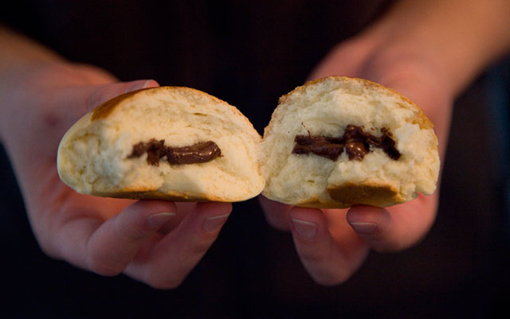

This banana looks a lot like a bird, doesn't it? When originally posted there was some debate whether it was a hummingbird, a seagull, or a crow. I stand by my earlier statement that it is a banana.
Norwegian Boller
Boller - or sweet wheat buns - is a favored snack and comfort food for Norwegians, especially enjoyed for childrens' birthdays or on a cold and rainy/snowy day coupled with hot cocoa.
One of the key ingredients of boller is cardamom -
A Dinosaur and Its Jacket
They say dinosaurs had feathers. I prefer to think they were a bit more stylish than that, as proven by this dinosaur wearing a swanky aluminium coat.

A Sweet Surprise
Oh yes: Sometimes when you bake boller, you put a piece of chocolate (usually dark) in the center before baking. That way when an unsuspecting recipient bites into the baked deliciousness they get a sweet surprise.
Chocolate Frogs Love Oranges
You know what's better than a chocolate covered caramel filled frog from Denmark? A chocolate covered caramel filled frog from Denmark served with juicy slices of orange.
Taking the Plunge
The Whiskey Jack is a surprisingly large bird that likes to eat food held up by tourists. In spite of what the image suggests, it does in fact have wings.